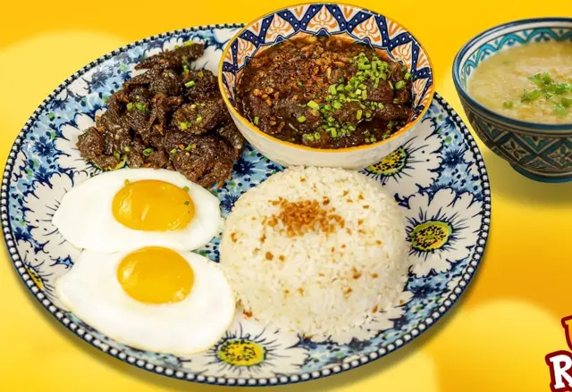
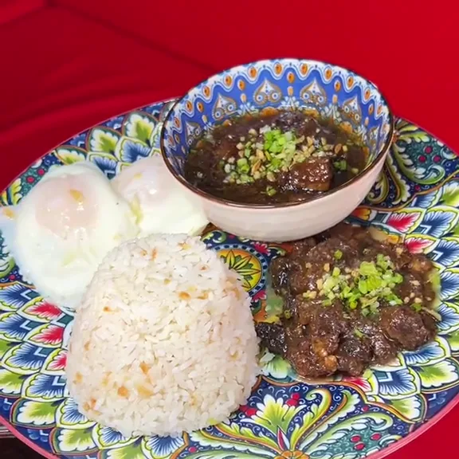
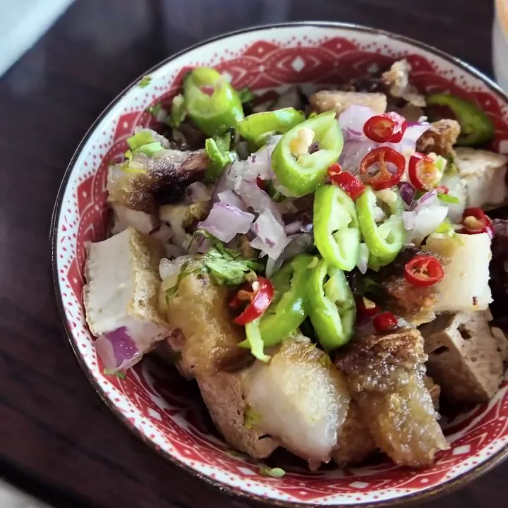

Signature
Tapsi Pares Signature
Unlimited Rice & Soup
- ₱245
A little preview. A big craving.
The upgraded tapsilog & pares.

Angeles, Pampanga · TapSi Pares 24/7
Our Tapsi Pares Signature: tapa, pares, eggs, and unlimited rice & soup. The comfort plate you come back for.
Busog. Lusog. Anytime. Made for your cravings.
The house favorite, then your next craving. Big flavors. Comfort in every plate.
Spotted on your feed
Food trips, creator features, and cravings caught on camera.
Silog for your cravings. Sizzling plates for the table. A bowl of bulalo to settle into.
TapSi Pares brings Filipino comfort food to Angeles, Pampanga, from individual plates to Sarap ka Pares sharing bundles.
A closer look at the plates worth coming back for.


Listed as open 24 hours.
Please call to confirm before your visit.
Kumain ka na sa TapSi? Your review helps other diners find us.
Leave us a Google review (opens in a new tab)Connect with TapSi
0969 477 7686
tapsipares.main@gmail.com
Questions about the menu? Get in touch before your visit.